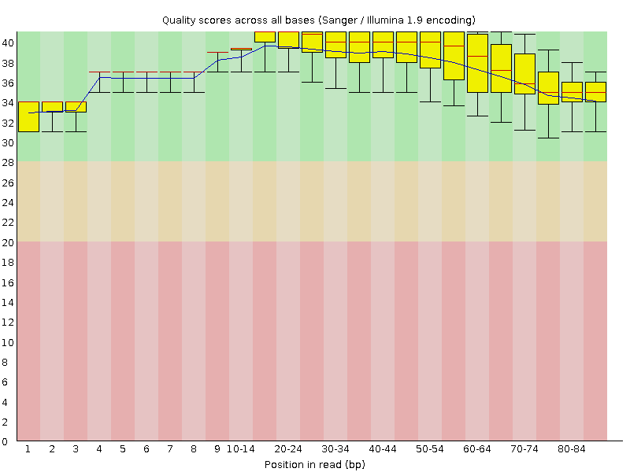
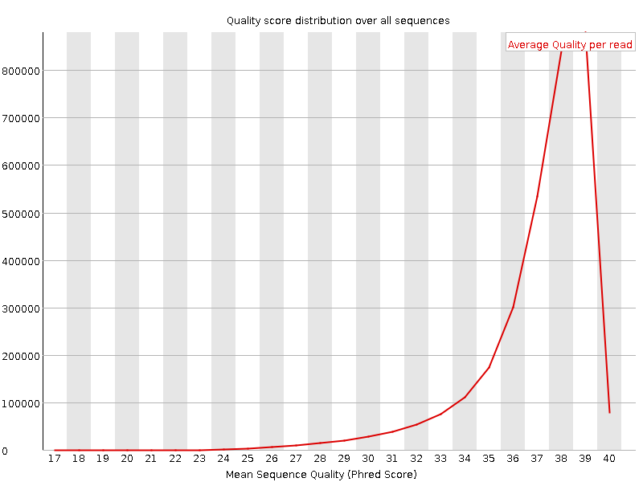
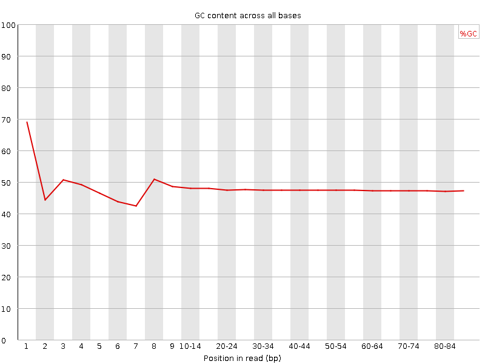
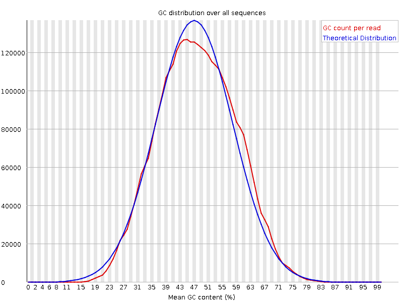
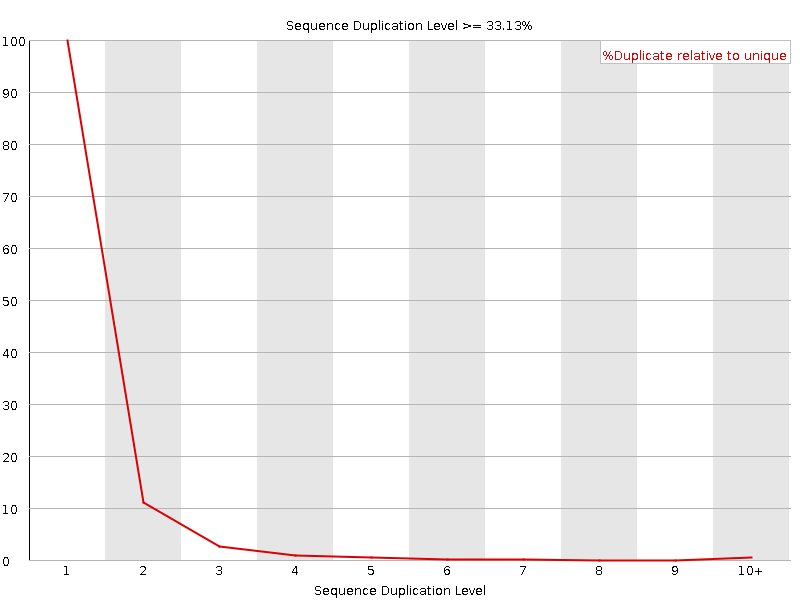

![[OK]](Icons/tick.png) Basic Statistics
Basic Statistics
| Measure | Value |
|---|---|
| Filename | c786-O.17_1.f.fastq |
| File type | Conventional base calls |
| Encoding | Sanger / Illumina 1.9 |
| Total Sequences | 3188209 |
| Filtered Sequences | 0 |
| Sequence length | 85 |
| %GC | 47 |
Per base sequence quality

Per sequence quality scores

![[FAIL]](Icons/error.png) Per base sequence content
Per base sequence content

Per base GC content

Per sequence GC content

Per base N content

Sequence Length Distribution

![[WARN]](Icons/warning.png) Sequence Duplication Levels
Sequence Duplication Levels

Overrepresented sequences
No overrepresented sequences
Kmer Content

| Sequence | Count | Obs/Exp Overall | Obs/Exp Max | Max Obs/Exp Position |
|---|---|---|---|---|
| AAAAA | 842635 | 2.770648 | 6.8274755 | 2 |
| TTTTT | 797950 | 2.487824 | 6.165747 | 2 |
| CTGGG | 497845 | 2.2730908 | 6.6773653 | 1 |
| CTGGA | 533735 | 2.2332184 | 6.92064 | 1 |
| TCCAG | 530775 | 2.1981022 | 6.5495806 | 7 |
| CTCCA | 509985 | 2.0903869 | 5.599389 | 6 |
| CAGAA | 503365 | 1.9507023 | 5.141701 | 1 |
| AAAAT | 588015 | 1.912981 | 5.3230267 | 3 |
| GAAAA | 532375 | 1.9101902 | 5.189241 | 1 |
| CTCAG | 427280 | 1.7694976 | 5.226247 | 1 |
| CTTTG | 446540 | 1.6761374 | 5.0471053 | 1 |
| GGAAA | 427405 | 1.6734614 | 5.1092443 | 1 |
| ATCCA | 329070 | 1.248845 | 5.330333 | 6 |